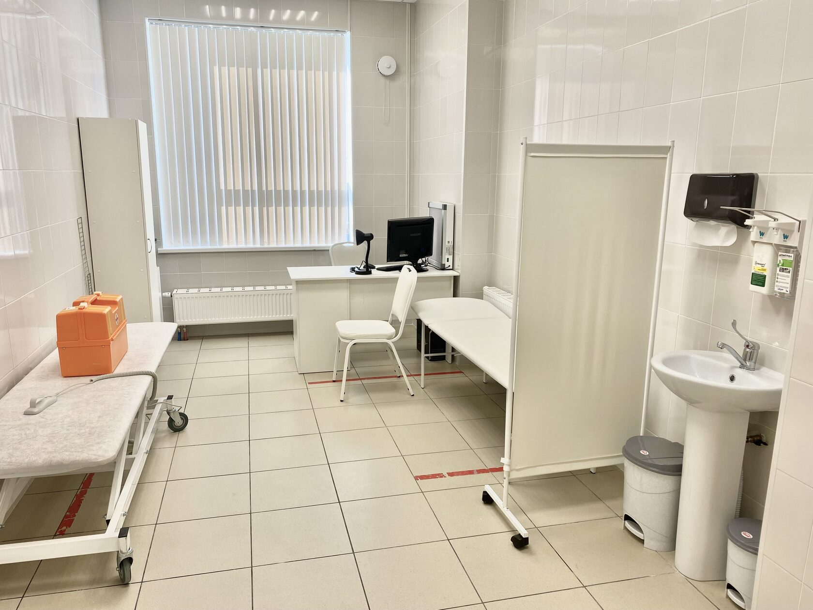
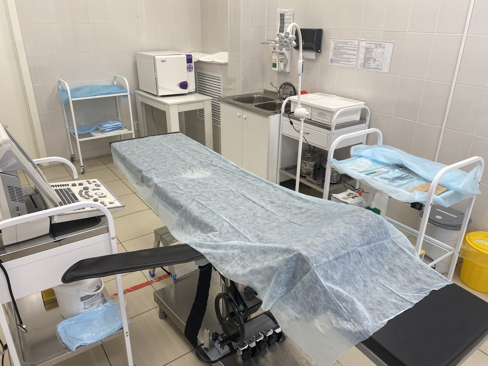

- Панкреатит - острый, хронический. Кисты поджелудочной железы, наружный панкреатический свищ. Панкреонекроз.
- Желчекаменная болезнь (камни в желчном пузыре, протоках). Острый, хронический холецистит, холедохолитиаз, холецистостома, дренаж желчный протоков.
- Грыжи - вентральные, пупочные, паховые, белой линии, спигелиевой линии, бедренные, послеоперационные, грыжи пищеводного отверстия диафрагмы, внутренние грыжи.
- Дивертикулы пищевода - шейный - ценкеровский дивертикул, дивертикулы грудного отдела пищевода.
- Гастроэзофагеальная рефлюксная болезнь - осложненная развитием грыжи пищеводного отверстия диафрагмы.
- Ахалазия кардии.
- Стриктуры пищевода.
- Полипы желудка, пищевода, двенадцатиперстной кишки.
- Спаечная болезнь брюшной полости.
- Язвенная болезнь желудка, двенадцатиперстной кишки.
Медицинский центр: услуги по ведению пациентов в послеоперационном периоде.
Мы специализируемся на ведении пациентов с осложненным и неосложненным послеоперационным периодом. Мы принимаем пациентов из различных медицинских учреждений в Свердловской области и прилегающих областях.
Консультативная помощь
Консультация по заболеваниям:

До и послеоперационный период
Консультация после операций:
- Первичная консультативная помощь пациентам, которые были прооперированы, которым еще предстоит оперативное лечение, либо были осложнения после операций. Пациентам, которые не могут разобраться нужно ли им оперироваться или нет.
- В нашей клинике проводится посистемная (консультативная методика) оценка состояния организма после операции, его восстановительная способность, риск нежелательных последствий, профилактика осложнений и укорочение восстановительного периода после операции.
- Работая в "Главной больнице Свердловской области" - мы знаем, что бывает мало одного врача для лечения пациента- необходимо подключать узких специалистов. Если у вас есть заболевание, по поводу которого вы не знаете куда иди и к кому обращаться - вы также можете проконсультироваться у нас - и мы дадим все необходимые рекомендации и скажем к какому специалисту вам нужно, а по возможности направим.

Перевязки и хирургические манипуляции
Ведение послеоперационного периода у пациентов с неосложненным и осложненным течением послеоперационного периода:
- Перевязки (обработка ран), снятие швов, наложение вторичных швов.
- Промывка, переустановка, подшивание, замена и первичная установка дренажей ран и полостей.
- Перевязки чистых и гнойных ран, пролежней.
- Восстановление холецистостом, цистостом.
- Замена калоприемников – консультация по уходу за калоприемником, за питанием. Уход за кишечными свищами, ведение свищевых ходов.
- Минимальные оперативные вмешательства – вскрытие, дренирование гнойников, удаление и иссечение атером, липом различных локализаций, иссечение старых некрасивых послеоперационных рубцов.
- Внутрисуставные инъекции.
- Пункция жидкостных скоплений послеоперационных ран под УЗИ наведением.
Сестринское дело
Проводятся манипуляции по сестринскому делу, а именно:
- Постановка внутримышечных, подкожных, внутрикожных инъекций, постановка капельниц.
- Уход за имеющимся катетером - ранняя диагностика осложнений длительно стоящих периферических и центральных катетером для инфузий.